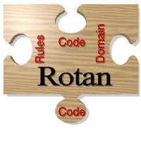

Rotan

Description
Rotan is a rule-base code transformation system. It is part of the
Timber project.
People
Henk J. Sips (Project leader)
Leo Breebaart (Design and implementation)
Frits Kuijlman (Maintainer)
Last modified Sat May 13 18:40:09 2017 UT by
Kees van Reeuwijk.